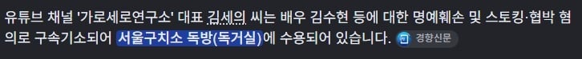

감빵에 갇히고 영치금 압류 걸려서 돈도 별로 없는데
374만원 비용청구서 보냄
ㄷㄷㄷ

정보 : 세의는 현재 독방이라 돈 꿀 사람도 없다
감빵에 갇히고 영치금 압류 걸려서 돈도 별로 없는데
374만원 비용청구서 보냄
ㄷㄷㄷ

정보 : 세의는 현재 독방이라 돈 꿀 사람도 없다
저러다 사람죽을라면 어쩔라고 저러냐
근대 가세연자체가 엄한사람 칼꽂는걸로 먹고살던 애라 별로 동정심이 안생김
장사의신도 쟈땜에 극단적 선택을 고민할 정도였는데 달게 받아야지
감옥 인기쟁이라 간수들의 지대한 관심을 다 받고 있어서 절대 자살 못 함. 하고 싶으면 2미터 전력질주만으로 목뼈가 박살날 기세로 벽에 머리박고 죽으면 되긴 하는데, 글쎄.. ㅋㅋㅋㅋㅋㅋ
사망 머더뻐커!
삼총사 중에 옳그떠 한명은 손절쳤더만
장사의 신 (X)
복수의 신(ㅇ)
ㅈㄴ웃기네
용호> 츄라이 츄라이
장신> 츄라이 츄라이